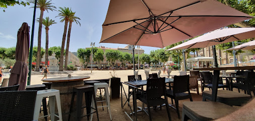
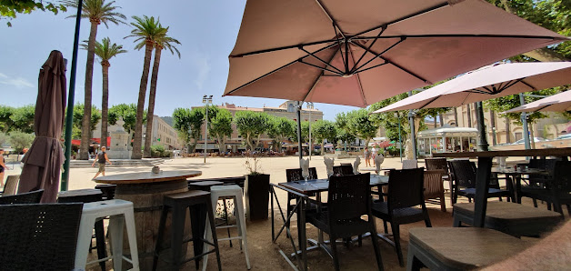
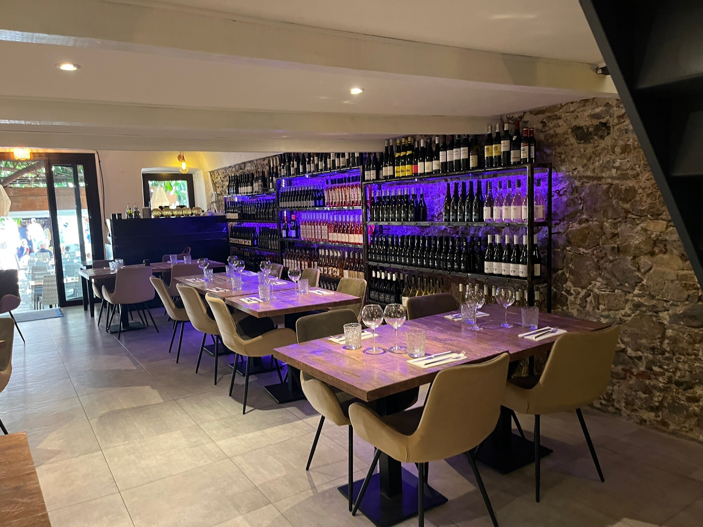

Tartare au couteau
Découpé en salle devant vous, assaisonné minute. Un geste de bistrot, un moment de spectacle.
Restaurant bistronomique · L'Île-Rousse
Sur la Place du Canon à L'Île-Rousse, Bernard et Sébastien perpétuent une cuisine bistronomique franco-méditerranéenne. Poissons de pêche locale, pasta maison, tartare découpé au couteau en salle : le tout servi sous un ficus trentenaire qui fait la réputation de la maison.

Notre maison
Place du Canon, au coeur de L'Île-Rousse et à deux pas de la plage, Le Grand Bleu déploie sa terrasse dorée en bois sous un ficus trentenaire. Un havre de lumière filtrée, juste ce qu'il faut de fraîcheur, où le temps ralentit entre deux services.
Bernard et Sébastien y perpètuent une cuisine franco-méditerranéenne, ancrée dans la saison et les produits locaux. Poissons du jour, pasta pétrie maison, tartare découpé au couteau en salle : une table où la tradition bistrot rencontre la précision bistronomique.

La signature
Une cuisine du geste, préparée à la minute, portée par des produits choisis. Quelques assiettes signalent l'esprit du Grand Bleu mieux que tous les discours.

Découpé en salle devant vous, assaisonné minute. Un geste de bistrot, un moment de spectacle.
Pâte pétrie maison, finis à l'huile de menthe. La fraîcheur d'un jardin méditerranéen.
Langoustines justes saisies, pasta maison al dente, jus iodé. L'assiette qui résume la Grande Bleue.
En images
Quelques fragments de la maison : le ficus, la salle, la Place du Canon, et la table.
Ce qu'on en dit
sur 1 181 avis Google.
#11 sur 65 à L'Île-Rousse (TripAdvisor).
« Cuisine maison, savoureuse et généreuse. »
« Une terrasse dorée sous un ficus trentenaire. Cadre unique et reposant. »
Nous trouver
La réservation se prend par téléphone. N'hésitez pas à appeler le midi ou en début d'après-midi.
Place du Canon, 12 Rue Napoléon
20220 L'Île-Rousse, Haute-Corse
| Midi | 11h30 à 14h00 |
| Soir | 18h45 à 22h00 |
| Ouverture | Tous les jours |
| Saison | 15 avril au 15 octobre |
Place du Canon, entre la gare et la plage. Parking du Canon à proximité.